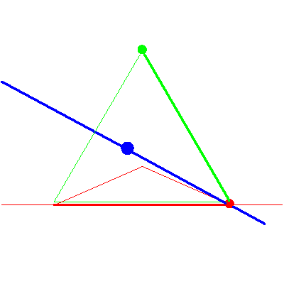
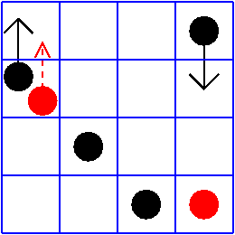

The line meeting a fixed point in P3


The line meeting a fixed point in P3 |
|
|  |
In the third, and subsequent stages of the specialization sequence, nothing happens to the solution line. This is the case (yes,no) in Table2/Figure 8 of GLR. The top red checker in the critical diagonal is in the rising checker's square, but there is no red checker in the critical row. The movement of the leftmost red checker reflects the moving point falling into the fixed point. |
|  |